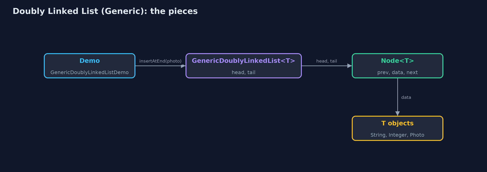
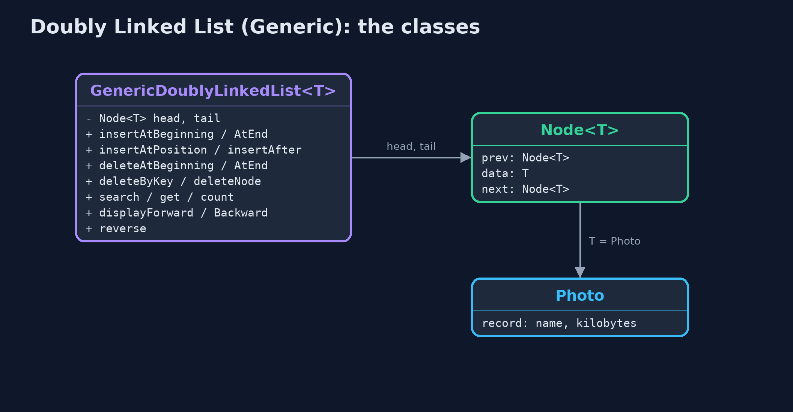
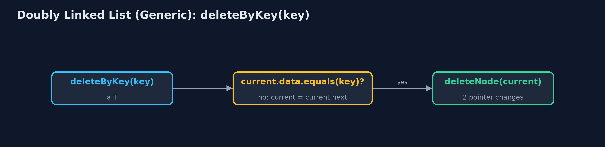
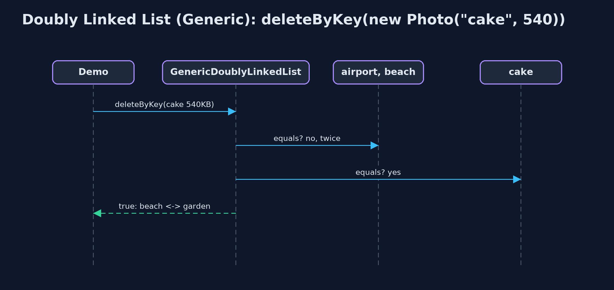

Doubly Linked List (Generic)
A generic doubly linked list is the doubly linked list written once with a type parameter T: each Node<T> has prev, a reference to its data, and next; the list keeps head and tail, matches with equals, and keeps every cost: O(1) at both ends, O(n) to reach a position. It is the shape of java.util.LinkedList<E>.

GenericDoublyLinkedList<Photo>: each Node<Photo> has prev, data and next; head and tail at the ends
A generic doubly linked list is the doubly-linked-list project written once for any element type. Each Node<T> has a prev pointer, a reference to its T data, and a next pointer; the list keeps head and tail. The same class holds photo names (String), sizes (Integer) or Photo records, and the compiler checks each use. Nodes are matched with **equals**; T needs no ordering. Every operation and cost is unchanged: O(1) insertion and deletion at both ends and at a node already reached, O(n) to reach a position. This is, in outline, how java.util.LinkedList<E> is built.
New to data structures? Read Start here first: it explains memory, references and counting steps in ten minutes.
The everyday idea
Picture a train whose carriages are coupled front and back, and can carry any cargo: passengers, coal, cars. The couplings work the same whatever is inside. A guard can walk either way, carriages can be added or removed at either end, and to ask whether a carriage carries "a dog photo of 610 kilobytes" you look at the cargo's description, not at the carriage.
The worked example: A photo viewer of Photo records, beside names and sizes
The photo viewer from doubly-linked-list, now holding Photo(name, kilobytes) records, beside the same class holding the names and the sizes. The demo inspects a node, works at both ends, searches for and deletes a separately made Photo, inserts at a position, and reverses the sizes and the names with the same code.
Why it exists
A list of photos, a list of names and a list of sizes should not need three copies of the same doubly-linked-list code. A type parameter gives one class for all of them, checked by the compiler, with no casts: nodes are created as new Node<>(data). Java's own LinkedList<E> is exactly this.
New words
| Word | What it means here |
|---|---|
| Node<T> | A node with prev, T data and next. |
| reference | What data holds: the address of the object, not a copy. |
| head and tail | The first and last node; both ends are one step away. |
| equals | How nodes are matched: by contents. A record's equals compares its fields. |
What you will see, act by act
Run the demo and it tells the story in 5 acts, printing the real numbers that the tests check:
./gradlew run| Act | What it shows |
|---|---|
| 1. One class, any element type | One class holds String names, Integer sizes (displayed backward) and Photo records. |
| 2. Node<T>: prev, a reference to the data, next | The head's prev is null and its next holds cake; the tail's next is null and its prev holds forest. |
| 3. Both ends, and equals in the middle | Insert at both ends: 0 steps, 6 pointers; search finds a new Photo("dog", 610) at position 3 with 4 equals comparisons; insertAtPosition sets 4 pointers; deleteByKey finds cake in 3 comparisons and changes 2. |
| 4. Deleting at the ends through head and tail | deleteAtBeginning and deleteAtEnd: 0 steps, 4 pointer changes together; an empty list is an underflow. |
| 5. The same algorithm for every type | reverse() makes 12 pointer changes on five Integers and on five Strings, with the same code. |
Each act is drawn step by step in the explained walkthrough and in the animation.
The operations, and what they cost
Time is given for the best, average and worst case in Big-O notation (START-HERE.md explains it by counting steps); the last column is what the demo actually counted, so every formula can be checked against a real number.
| Operation | What it does | Time: best / average / worst | Extra space | Steps counted in the demo |
|---|---|---|---|---|
| Display forward / backward | Follow next from head, or prev from tail | O(n) / O(n) / O(n) | O(1) | 5 steps each way for 5 photos |
| Insert / delete at beginning or end | Through head or tail: 3 pointers to insert, 2 to delete | O(1) / O(1) / O(1) | O(1) | 0 steps |
| Insert at position | Walk to the node before, then set 4 pointers | O(1) at the ends / O(n) / O(n) | O(1) | 4 pointer changes |
| Delete a node already reached | node.prev.next = node.next; node.next.prev = node.prev | O(1) / O(1) / O(1) | O(1) | 2 pointer changes |
| Delete by key / search | Walk comparing with equals, then unlink | O(1) / O(n) / O(n) | O(1) | 3 comparisons, 2 pointer changes |
| Count / get | Walk from head | O(n) / O(n) / O(n) | O(1) | one step per node |
| Reverse | Swap prev and next in every node, then head and tail | O(n) / O(n) / O(n) | O(1) | 12 pointer changes for 5 nodes |
Extra space is the memory an operation needs besides the structure itself. A loop needs a fixed amount, O(1); a recursive operation needs one call-stack frame for every call still waiting, so its extra space is the depth of the recursion.
The operations in code
Insertion at the end
/** Insertion at the end, through the tail pointer: no traversal. O(1). */
public Node<T> insertAtEnd(T data) {
Node<T> newNode = new Node<>(data);
if (tail == null) {
head = newNode;
tail = newNode;
steps.pointer(2);
} else {
newNode.prev = tail; // the new node's prev is the old last node
tail.next = newNode; // the old last node's next is the new node
tail = newNode;
steps.pointer(3);
}
return newNode;
}new Node<>(data) needs no cast, unlike a generic array. Then the tail's three pointers, exactly as in the String-only list.
Deletion by key with equals
/** Deletion by key: search for the first node holding {@code key}, then unlink it. O(n). */
public boolean deleteByKey(T key) {
for (Node<T> current = head; current != null; current = current.next) {
steps.compare();
if (current.data.equals(key)) {
deleteNode(current);
return true;
}
steps.step();
}
return false;
}current.data.equals(key) compares contents, so a separately made Photo("cake", 540) is found; deleteNode then unlinks it with two pointer changes.
Deletion of a node
/**
* Deletes a node already reached: its predecessor's {@code next} and its successor's
* {@code prev} are set past it (or head and tail, at the ends). O(1): the node knows its
* predecessor, so no search is needed.
*/
public void deleteNode(Node<T> node) {
if (node.prev == null) {
head = node.next; // deleting the first node
} else {
node.prev.next = node.next;
}
if (node.next == null) {
tail = node.prev; // deleting the last node
} else {
node.next.prev = node.prev;
}
steps.pointer(2);
}The O(1) unlink every deletion ends in: neighbours pointed at each other, head or tail moved at the ends.
Compared with related structures
The generic doubly linked list against its neighbours (n nodes):
| Property | Generic doubly list | Doubly list of String | Generic singly list |
|---|---|---|---|
| Element types | any T | String only | any T |
| Insert / delete at the end | O(1) | O(1) | O(n) |
| Delete a node already reached | O(1) | O(1) | O(n) |
| Walk backwards | yes | yes | no |
| Pointers per node | 2 | 2 | 1 |
| Java's own | LinkedList<E> | LinkedList<String> |
The code
src/main/java/com/jk/explore/doublylinkedlistgeneric/
├── GenericDoublyLinkedList.java A generic doubly linked list, holding data of any type {@code T}: every node has a {@code prev} and a {@code next} pointer, and the list keeps pointers to both ends, {@code head} and {@code tail}
├── GenericDoublyLinkedListDemo.java Tells the story of the generic doubly linked list in five acts, printing the real step counts
├── Lines.java The demo's printed lines, kept in one {@code StringBuilder} so the tests can check them
├── Node.java A node of a doubly linked list: its data, a pointer to the previous node and a pointer to the next node, as {@code struct node { data; struct node prev, next; }} in a C textbook
├── Photo.java One photo in the viewer: a type of our own, to show that the generic list holds any type
└── StepCounter.java Counts what a doubly-linked-list operation costs: traversal steps (following one next or prev pointer), comparisons (checking one node's data against a key), and pointer changes (setting one head, tail, next or prev pointer)Test
./gradlew test19 tests in DemoRunsTest, GenericDoublyLinkedListTest. Every number the demo prints is asserted, and nothing depends on the clock, so every run gives the same result.
Common mistakes
| The mistake | What goes wrong | The fix |
|---|---|---|
Matching with == | An equal object made elsewhere is not found. | Use equals. |
| Forgetting one of the four insertion pointers | Forwards and backwards walks disagree. | Set all four, as in the String-only list. |
| Raw types | Node or GenericDoublyLinkedList without angle brackets switches off the compiler's checks. | Always write the type argument. |
| Not updating head or tail at the ends | A deleted node stays reachable from head or tail. | Move head or tail when the deleted node has no prev or no next. |
Try it yourself
- Easy. Write
int totalKilobytes(GenericDoublyLinkedList<Photo> album)walking from the head withhead(),next()anddata(). What does it return for the five photos? - Medium. Write
void moveToFront(Node<T> node)for the generic list. Why is it O(1), and which structure uses it? - Harder. Write
T removeFirstLargerThan(T limit), which deletes and returns the first element greater thanlimit. What must change in the class header forcompareToto be available, and what does that cost the class?
The answers are in docs/exercises.md, below the questions, so they are not given away.
When to use it
- Any list of objects of one type that is walked both ways or changed at both ends.
- A deque or an LRU cache of any element type.
When not to
- Reading by position: use
ArrayList<E>. - Memory is tight: each element costs a node with two pointers plus the object.
Where you have already met this
java.util.LinkedList<E>andDeque<E>.- Browser history and music playlists holding page or track objects.
Technologies and versions
| Technology | Version | Used for |
|---|---|---|
| Java | 25 | the code (toolchain set in build.gradle; Gradle fetches JDK 25 if it is missing) |
| Gradle | 9.8.0 (wrapper) | build and run, nothing to install |
| JUnit | 6.1.3 | the tests |
| videokit | course tool | the narrated video and animation: Piper en_US-amy-medium, speed 0.8, longer pauses (the amy-slow voice) |
Learning material
| Document | What it is for |
|---|---|
| Start here | the ideas every project relies on |
| Problem statement | the situation and what the project must show |
| Prerequisites | what you need to know first |
| Doubly Linked List (Generic), explained | every act, picture by picture |
| Animated walkthrough | the structure changing step by step, narrated |
| Cheat sheet | the whole structure on one page |
| Exercises and answers | practice, easy to harder |
| Session guide | a one-hour lesson |
| Specification | what this project must be true of |
How the pieces fit
One generic class; each Node<T> refers to its neighbours and its data object.

The classes
GenericDoublyLinkedList<T> holds head and tail; Photo is one T.

How the data moves
Walk matching with equals, then unlink in O(1).

Who calls whom, in order
Three equals comparisons, then two pointer changes.

Video
video/doubly-linked-list-generic-explained.mp4 (with .m4a audio and .srt subtitles) is built by video/build_video.sh. Rendered media is not committed.
Where this sits
Part of the data structures course, in arrays-and-lists.